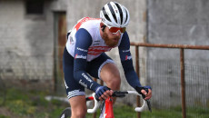

Anish Khatri
Web Developer
My Hobby
Me playing cricking shots at victoria oval-Adelaide,SA,5000
More photo gallary
Description
I am very found of cricket as i have always passion to become a cricketer and wanted to play for my nation. I have played undr-19 from my nation Nepal. But due to lack of future and other financial support and parents support. I cant continue my passion .
I am still pursing my intrest as i play multicultural games of cricket that is organized by SACA- South Australian Cricket association between teams from different countries.
My other Hobbies
In addition, i love cycling with my friends and making vlogs different places that i visit. I have procided the sites liked by me on cyclng and vlogs. click over image for more info.
